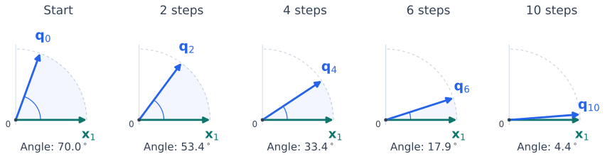

The Power Method#
The power method, or power iteration, finds an eigenvector associated with the eigenvalue of largest magnitude, provided that eigenvalue is strictly dominant and the starting vector contains the required component. It uses only repeated matrix-vector multiplication and normalization. The same idea will lead to orthogonal iteration and QR iteration.
The Dominant Component#
For the analysis, assume that \(A\in\mathbb C^{n\times n}\), with \(n\ge2\), is diagonalizable and its eigenvalues satisfy
Choose corresponding eigenvectors \(\boldsymbol{x}_1,\ldots,\boldsymbol{x}_n\) with \(\|\boldsymbol{x}_i\|_2=1\). Expand a unit starting vector in this eigenvector basis:
The condition \(c_1\ne0\) means that the dominant mode is present. For nonorthogonal eigenvectors, this coefficient is not generally \(\boldsymbol{x}_1^H\boldsymbol{q}_0\). A starting vector drawn from a continuous distribution satisfies \(c_1\ne0\) with probability one in exact arithmetic.
Repeated application of \(A\) scales each component by its eigenvalue:
Relative to the first component, every other component is multiplied by \((\lambda_i/\lambda_1)^k\). These ratios tend to zero. Thus the dominant component eventually determines the direction, even if all components are shrinking because \(|\lambda_1|<1\).
Normalize After Each Multiplication#
The magnitude of \(A^k\boldsymbol{q}_0\) can become very large or very small. Since we want its direction, normalize after each multiplication:
In exact arithmetic, this gives \(\boldsymbol{q}_k=A^k\boldsymbol{q}_0/\|A^k\boldsymbol{q}_0\|_2\). The normalization changes the length, not the direction, and avoids accumulating the overall growth or decay of the powers.


Fig. 14 Normalized iterates align with the dominant direction. Here \(A=\operatorname{diag}(1,0.7)\), \(\boldsymbol{x}_1=(1,0)^T\), and \(\boldsymbol{q}_0\) makes an angle of \(70^\circ\) with \(\boldsymbol{x}_1\). Every arrow has length \(1\); intermediate iterates are omitted. This symmetric example approaches the direction monotonically. General matrices need not do so.#
At the current iterate, estimate the eigenvalue using the Rayleigh quotient:
We use \(\mu_k\) for an estimate and reserve \(\lambda_i\) for the eigenvalues of \(A\). If \(\boldsymbol{q}_k\) is an exact eigenvector, this quotient gives its eigenvalue, including its sign or complex phase.
To decide when to stop, compute the residual
The residual measures how closely the current pair satisfies the eigenvalue equation. For a chosen tolerance \(\tau>0\), a typical stopping test is \(\|\boldsymbol{r}_k\|_2\le\tau\|A\|_2\). A norm estimate can supply the matrix scale in an implementation. Changes in \(\mu_k\) alone can be misleading because the estimate may change little while the vector is still inaccurate. Test before normalizing again, so the returned pair is \((\mu_k,\boldsymbol{q}_k)\). A small residual verifies an approximate eigenpair; it does not by itself establish that the eigenvalue is dominant.
Under our assumptions, \(\boldsymbol{z}_k\) is never zero. If \(\boldsymbol{z}_k=0\) outside these assumptions, the current \(\boldsymbol{q}_k\) is an exact eigenvector for eigenvalue zero. Normalization is then impossible; restart if the dominant eigenpair is wanted. An implementation should also impose a maximum number of iterations.
Each iteration needs one matrix-vector product and \(O(n)\) additional work. A dense product costs \(O(n^2)\) operations; a sparse matrix or an operator that can be applied without forming \(A\) may be much cheaper.
Convergence: The Eigenvalue Ratio Controls the Rate#
The key quantity is
Theorem 23 (Convergence of Power Iteration)
Under the assumptions above, the line spanned by \(\boldsymbol{q}_k\) converges to the line spanned by \(\boldsymbol{x}_1\). More precisely, there are scalars \(\phi_k\) with \(|\phi_k|=1\) such that
Proof. Factor out the dominant component:
where \(C=\sum_{i=2}^n|c_i/c_1|\) is independent of \(k\). Normalizing gives
The triangle inequality and its reverse form show that normalization preserves the rate:
For the eigenvalue estimate, use \((A-\lambda_1I)\boldsymbol{x}_1=0\) and \(\|\boldsymbol{q}_k\|_2=1\):
The factor \(\phi_k\) accounts for sign or phase changes. For real \(A\) and a real start, a positive \(\lambda_1\) gives convergence to either \(\boldsymbol{x}_1\) or \(-\boldsymbol{x}_1\). A negative \(\lambda_1\) makes the signs alternate. In complex arithmetic, the phase can keep rotating. The direction, interpreted as a one-dimensional subspace, converges in all these cases.
The bound is geometric: a smaller \(\rho\) gives faster convergence, while \(\rho\) close to \(1\) gives slow convergence. The constant also matters. A very small \(c_1\) can delay the appearance of the dominant direction. The rate can be faster if the starting vector has no components associated with eigenvalues of magnitude \(|\lambda_2|\).
The Hermitian Case: A More Accurate Eigenvalue Estimate#
If \(A\) is Hermitian, including real symmetric matrices, the Rayleigh quotient has a stronger error bound. Write \(\boldsymbol{q}_k=\alpha_k\boldsymbol{x}_1+\boldsymbol{w}_k\) with \(\boldsymbol{w}_k\perp\boldsymbol{x}_1\). The directional bound above gives \(\|\boldsymbol{w}_k\|_2=O(\rho^k)\).
Because \(A\) is Hermitian, both cross terms vanish when expanding the Rayleigh quotient. Also, \(|\alpha_k|^2+\|\boldsymbol{w}_k\|_2^2=1\). Therefore,
Thus the eigenvalue estimate can converge faster than the eigenvector direction. This stronger bound does not hold for a general nonsymmetric matrix. For another presentation of power iteration and its convergence, see Driscoll and Braun, Fundamentals of Numerical Computation.
Limitations and the Next Step#
Power iteration finds one dominant direction. If \(c_1=0\), that direction is absent from the exact iterates. If eigenvalues tie in magnitude, a single direction need not emerge; a conjugate pair or eigenvalues \(\lambda\) and \(-\lambda\) can produce persistent oscillations. A small gap in magnitudes can make convergence too slow to be useful.
Diagonalizability is an assumption of the proof, not a requirement for running the algorithm. For matrices that are not diagonalizable, the convergence rate above need not apply.
To find additional directions, we must remove the one already found. This leads to deflation.